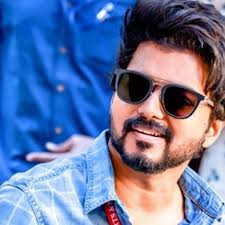

VIJAY
languages
telugu
hindi
tamil
article
Joseph Vijay Chandrasekhar(born 22 June 1974) known professionally as Vijay, is an Indian actor and playback singer who works in Tamil cinema.

CARRER
At the age of 10, Vijay made his debut as a child actor in the Tamil film Vetri, produced by P. S. Veerappa in 1984.
He then acted as a child actor in films such as Kudumbam (1984), Vasantha Raagam (1986), Sattam Oru Vilayaattu (1987) and Ithu Engal Neethi (1988).
He also acted in a supporting role with Rajinikanth in Naan Sigappu Manithan (1985), directed by his father.Vijay in 1998
Vijay played the lead role for the first time in Theerpu in 1992. Vijay then appeared in the films Senthoorapandi, Rasigan, Deva and Coimbatore Mappillai, some of which were successful.
In 1996, Vijay acted in Poove Unakkaga, directed by Vikraman, which according to him, gave him his initial break and popularity
.In 1997, Vijay acted in Kaalamellam Kaathiruppen and Love Today
.